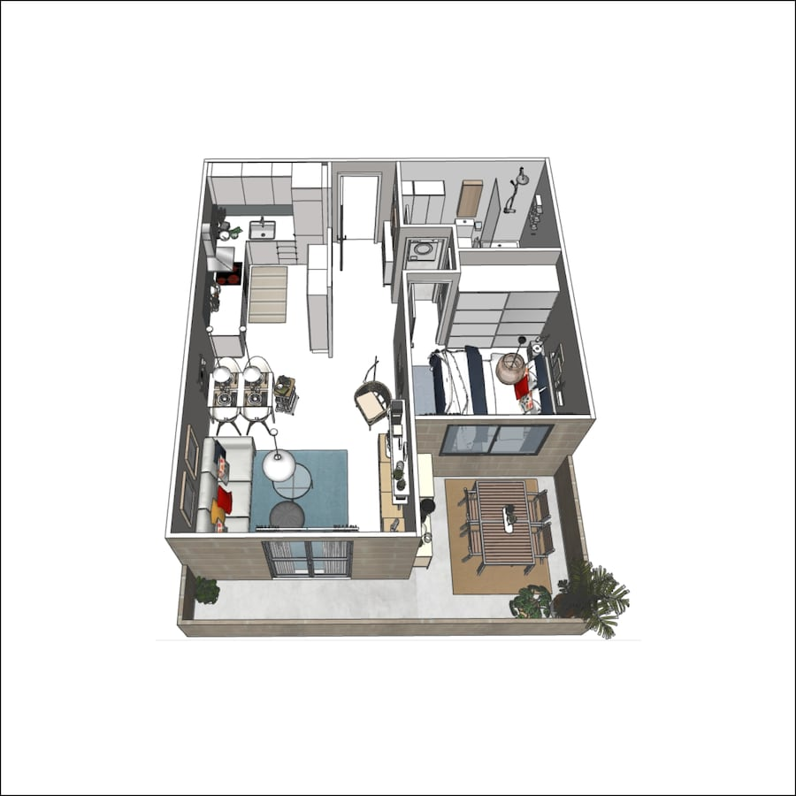

Consulta de diseño de interiores

Ejemplo de consulta de diseño de interiores de un salón
Con nuestros diseñadores de interiores te ayudaremos a crear las mejores opciones y soluciones para mejorar el espacio o lugar existente de tu hogar que revitalicen el estilo, las funciones y el cambio de imagen que desees conseguir. Tendrás una reunión de 90 minutos con uno de nuestros diseñadores de interiores para crear la mejor solución adaptada a tu presupuesto.
- En este servicio te ofrecemos:
- Selección de muebles y complementos
- Colores
- Organización de tu espacio en 2D
- Presupuesto
- Decorar con textiles
Proyecto de diseño de interiores
Ejemplo de proyecto de diseño de interiores para una vivienda completa
Con este servicio te entregamos un proyecto completo con distribuciones de espacio, alzados y vistas en 3D del espacio que quieres cambiar. Te ayudamos a profundizar en el analisis del espacio y crear una solución completa de tu estancia, considerando siempre tu presupuesto estimado con ideas e inspiracion. Tendrás un diseñador de interiores que te acompañará durante todo el proceso hasta finalizar la mejor solución para ti.
- En este servicio trataremos:
- Mood boards de inspiración
- Distribuciones en planta
- Alzados del espacio
- Imágenes 3D